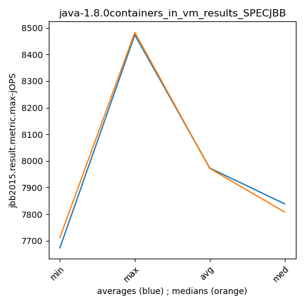

java-1.8.0 SPECJBB
Context at bottom
/home/jvanek/git/benchmarks-in-nested-virtualisation-toolchain/final_results/containers_in_vm_results/containers_in_vm_results_JMH
java-1.8.0
SPECJBB
/home/jvanek/git/benchmarks-in-nested-virtualisation-toolchain/final_results/containers_in_vm_results/containers_in_vm_results_J2DBENCH
java-1.8.0
SPECJBB
/home/jvanek/git/benchmarks-in-nested-virtualisation-toolchain/final_results/containers_in_vm_results/containers_in_vm_results_RADARGUNs3
java-1.8.0
SPECJBB
/home/jvanek/git/benchmarks-in-nested-virtualisation-toolchain/final_results/containers_in_vm_results/containers_in_vm_results_SPECJBB
java-1.8.0
SPECJBB
containers_in_vm_results_SPECJBB
- containers_in_vm_results_SPECJBB - max-jops
- containers_in_vm_results_SPECJBB - critical jops
containers_in_vm_results_SPECJBB - max-jops
Expected number of java-1.8.0 JDKs: 10
1st avgmed_alljdks_metric:
/home/jvanek/git/benchmarks-in-nested-virtualisation-toolchain/final_results/result_processing.py /home/jvanek/git/benchmarks-in-nested-virtualisation-toolchain/final_results/containers_in_vm_results/containers_in_vm_results_SPECJBB jbb2015.result.metric.max-jOPS False
values: [7808, 7905, 7905, 8001, 7905, 7712, 7820, 7712, 7712, 7712, 7622, 7712, 7808, 8018, 8001, 7905, 7712, 7519, 7519, 7712, 7712, 7808, 7712, 7845, 8117, 7808, 7905, 7712, 7712, 7820, 7712, 7808, 7712, 7905, 7808, 8290, 8387, 8580, 8483, 8098, 8194, 8290, 8290, 8387, 8483, 8531, 8483, 8387, 8483, 8483]

Expected number of iterations: 5
final number of values: 50 out of 50
Pass rate: 100.0%
values: (7519, 8580, 7973.3, 7905)

** accuracy from all jdks and runs
more is better
MIN: 7519
MAX: 8580
AVG: 7973.3
MED: 7905
Relative differences 1:
MIN-MAX: 12.0 %
MIN-AVG: 6.0 %
MIN-MED: 5.0 %
MAX-MIN: -14.0 %
MAX-AVG: -8.0 %
MAX-MED: -9.0 %
AVG-MED: -1.0 %
stored to java-1.8.0.properties. sort | uniq that!
2nd avgmed_by_jdk_metric:
values: [7904.8, 7733.6, 7832.2, 7673.4, 7838.8, 7791.4, 7789.0, 8367.6, 8328.8, 8473.4]

values: [7905, 7712, 7808, 7712, 7808, 7808, 7808, 8387, 8290, 8483]

values: (7673.4, 8473.4, 7973.3, 7838.8)
values: (7712, 8483, 7972.1, 7808)

** accuracy from all jdks where runs were avged
more is better
MIN: 7673.4
MAX: 8473.4
AVG: 7973.3
MED: 7838.8
Relative differences 1:
MIN-MAX: 9.0 %
MIN-AVG: 4.0 %
MIN-MED: 2.0 %
MAX-MIN: -10.0 %
MAX-AVG: -6.0 %
MAX-MED: -8.0 %
AVG-MED: -2.0 %
stored to java-1.8.0.properties. sort | uniq that!
** accuracy from all jdks where runs were medianed
more is better
MIN: 7712
MAX: 8483
AVG: 7972.1
MED: 7808
Relative differences 1:
MIN-MAX: 9.0 %
MIN-AVG: 3.0 %
MIN-MED: 1.0 %
MAX-MIN: -10.0 %
MAX-AVG: -6.0 %
MAX-MED: -9.0 %
AVG-MED: -2.0 %
stored to java-1.8.0.properties. sort | uniq that!
containers_in_vm_results_SPECJBB - critical jops
Expected number of java-1.8.0 JDKs: 10
1st avgmed_alljdks_metric:
/home/jvanek/git/benchmarks-in-nested-virtualisation-toolchain/final_results/result_processing.py /home/jvanek/git/benchmarks-in-nested-virtualisation-toolchain/final_results/containers_in_vm_results/containers_in_vm_results_SPECJBB jbb2015.result.metric.critical-jOPS False
values: [1965, 1816, 1893, 1992, 1873, 2129, 1945, 1956, 1786, 1858, 1830, 1921, 1953, 1888, 2316, 1837, 1686, 2017, 2222, 1818, 2064, 2125, 1906, 1848, 2076, 1864, 1824, 2087, 1866, 2069, 1959, 2350, 1756, 1679, 2042, 2038, 2141, 1949, 1917, 2001, 1813, 2001, 1983, 1866, 2041, 1996, 1986, 1929, 1848, 2115]
Expected number of iterations: 5
final number of values: 50 out of 50
Pass rate: 100.0%
values: (1679, 2350, 1956.8, 1953)

** accuracy from all jdks and runs
more is better
MIN: 1679
MAX: 2350
AVG: 1956.8
MED: 1953
Relative differences 1:
MIN-MAX: 29.0 %
MIN-AVG: 14.0 %
MIN-MED: 14.0 %
MAX-MIN: -40.0 %
MAX-AVG: -20.0 %
MAX-MED: -20.0 %
AVG-MED: -0.0 %
stored to java-1.8.0.properties. sort | uniq that!
2nd avgmed_by_jdk_metric:
values: [1907.8, 1934.8, 1981.6, 1916.0, 2003.8, 1942.0, 1957.2, 2009.2, 1940.8, 1974.8]

values: [1893, 1945, 1921, 1837, 2064, 1866, 1959, 2001, 1983, 1986]

values: (1907.8, 2009.2, 1956.8, 1957.2)
values: (1837, 2064, 1945.5, 1959)

** accuracy from all jdks where runs were avged
more is better
MIN: 1907.8
MAX: 2009.2
AVG: 1956.8
MED: 1957.2
Relative differences 1:
MIN-MAX: 5.0 %
MIN-AVG: 3.0 %
MIN-MED: 3.0 %
MAX-MIN: -5.0 %
MAX-AVG: -3.0 %
MAX-MED: -3.0 %
AVG-MED: 0.0 %
stored to java-1.8.0.properties. sort | uniq that!
** accuracy from all jdks where runs were medianed
more is better
MIN: 1837
MAX: 2064
AVG: 1945.5
MED: 1959
Relative differences 1:
MIN-MAX: 11.0 %
MIN-AVG: 6.0 %
MIN-MED: 6.0 %
MAX-MIN: -12.0 %
MAX-AVG: -6.0 %
MAX-MED: -5.0 %
AVG-MED: 1.0 %
stored to java-1.8.0.properties. sort | uniq that!
/home/jvanek/git/benchmarks-in-nested-virtualisation-toolchain/final_results/containers_in_vm_results/containers_in_vm_results_RADARGUNs1
java-1.8.0
SPECJBB
/home/jvanek/git/benchmarks-in-nested-virtualisation-toolchain/final_results/containers_in_vm_results/containers_in_vm_results_DACAPO
java-1.8.0
SPECJBB
pass rates:
containers_in_vm_results_SPECJBB=100.0%
Context:
- containers_in_vm_results
- SPECJBB